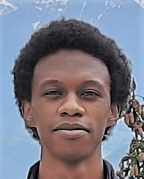

Oussama Oulkaid
PhD Student
About
Since October 2022, I am conducting a PhD
thesis at
LIP,
VERIMAG and
Aniah — where I work under the supervision of
Matthieu Moy,
Pascal Raymond,
Mehdi Khosravian and
Bruno Ferres
on developing formal verification techniques for Electrical Rule Checking (ERC) of integrated circuits.
Publications
O. Oulkaid, B. Ferres, M. Moy, P. Raymond, M. Khosravian, L. Henrio, G. Radanne.
A Transistor Level Relational Semantics for Electrical Rule Checking by SMT Solving.
DATE 2024.
[pdf,
bib]
B. Ferres, O. Oulkaid, L. Henrio, M. Khosravian, M. Moy, G. Radanne, P. Raymond.
Electrical Rule Checking of Integrated Circuits using Satisfiability Modulo Theory.
DATE 2023.
[pdf,
bib]
Teaching
Teaching Assistant in
Lionel Rieg's Course:
Conception et Exploitation des Processeurs (RISC-V).
Grenoble INP - ENSIMAG. Spring 2024.
Teaching Assistant in
Laurence Pierre's Course:
Modélisation des Systèmes Numériques (VHDL).
Université Grenoble Alpes. Fall 2023.
Contact
oussama.oulkaid@ens-lyon.fr